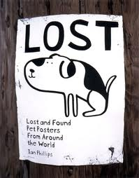

PASOS A SEGUIR
HE PERDIDO MI MASCOTA

Sabemos que hay muchísimas páginas en las que te explican que hacer cuando tu fiel amigo desaparece o se escapa, pero nuestra intención no es redactar lo mismo una vez más sino explicar lo que realmente a nosotros nos funcionó después de pasar por perder a nuestra mascota o encontrar la mascota de otra persona. Espero, de corazón, que os sea de gran ayuda.Si pierdes a tu compañero, lo primero y antes de todo es no perder los nervios, hay que mantenerse tranquilo y seguir los siguientes pasos:
- Si se acaba de perder búscalo rápidamente por la zona donde se ha perdido, preguntando a todo el mundo que te encuentres por el camino, no te des por vencido.
- Si no encuentras a tu mascota dirígete a las clínicas veterinarias más cercanas de la zona.
- Si se pierde por la zona donde vives , acude a todas esas clínicas que conozcas sean o no tu clínica habitual, aunque recomendamos que para hacerlo todo más rápido, acudas primero a tu clínica, ya que si no llevas el pasaporte de tu mascota, ellos tendrán toda la información, siendo lo más importante el número de microchip, que te lo pueden dar y así puedes proporcionárselo al resto de clínicas a las que acudas posteriormente, igualmente ellos darán aviso al Colegio Oficial Veterinario de las Islas Baleares (COVIB), informando sobre la pérdida de ese animal.
- En caso de solo estar de visita en una zona y no conocer los veterinarios que hay más cerca busca en nuestro apartado “ Veterinarios” , donde encontraras, rápidamente, todos los veterinarios que hay tanto por islas, municipios y barrios si es el caso de Palma capital, aun así también recomendamos que si no llevas contigo el pasaporte de tu mascota contactes con tu veterinario para que te pueda facilitar los datos del microchip antes de acudir a las clínicas de la zona. Así todo será muchísimo más rápido.
- Una vez en la clínica, proporciona al veterinario toda la información, cuanta más mejor, de tu mascota.
RECOMENDACIÓN NUESTRA: Siempre lleva contigo una foto de tu mascota en tu móvil, cuesta muy poco y resulta muy útil en estos casos. - Después de visitar a todos los veterinarios de la zona y sin éxito de encontrar a tu mascota, publica en diferentes páginas un anuncio con todos los datos de tu mascota. En nuestra sección “Publicar” podrás poner rápidamente un anuncio en nuestra página, y en la sección “Facebook, Twitter y Páginas web” encontraras muchas otras donde también poder publicar, cuantas más personas vean tu anuncio antes volverá a tu lado.
RECOMENDACIÓN NUESTRA: Pon siempre una imagen. - Crea un cartel con toda la información que puedas, y con una foto (mucho mejor si la foto ocupa medio folio). Pégalo en todas las clínicas veterinarias, tiendas, bares y grandes establecimientos de la zona, lo importante es colocarlos en lugares en los que sabes que todo el mundo acudirá alguna vez.
- Por último, y lo más importante, SAL CADA DIA A BUSCARLO Y NUNCA PIERDAS LA ESPERANZA.
HE ENCONTRADO UN ANIMAL PERDIDO

- Si acabas de encontrar a un animal perdido recorre rápidamente la zona donde lo has encontrado, preguntando a todo el mundo que te encuentres por el camino, por si saben de quien es.
- Si no encuentras al dueño dirígete a las clínicas veterinarias más cercanas de la zona.
- Si lo encuentras por la zona donde vives, acude a todas esas clínicas que conozcas sean o no tu clínica habitual, ellos miraran si el animal pertenece a su base de datos o si tiene microchip y así poder llamar a sus dueños, igualmente ellos darán aviso al Colegio Oficial Veterinario de las Islas Baleares (COVIB), informando sobre las características del animal encontrado, por si sus dueños ya han acudido a otra clínica y han dado parte de su pérdida.
- En caso de solo estar de visita en una zona y no conocer los veterinarios más cercanos busca en nuestro apartado “ Veterinarios” donde encontraras, rápidamente, todos los veterinarios que hay tanto por islas, municipios y barrios( si es el caso de Palma capital). Es más probable que los veterinarios de la zona puedan tener información sobre esa mascota.
- Después de visitar a todos los veterinarios de la zona y sin éxito de encontrar a su dueño, publica en diferentes páginas un anuncio con todos los datos de la mascota. En nuestra sección “Publicar” podrás poner rápidamente un anuncio en nuestra página, y en la sección “Protectoras” encontraras muchas otras donde también poder publicar, cuantas más personas vean tu anuncio antes encontraras a sus dueños y regresará a su hogar.
RECOMENDACIÓN NUESTRA: Pon siempre una imagen. - Crea un cartel con toda la información que puedas, y con una foto (mucho mejor si la foto ocupa medio folio). Pégalo en todas las clínicas veterinarias, tiendas, bares y grandes establecimientos de la zona, lo importante es colocarlos en lugares en los que sabes que todo el mundo acudirá alguna vez durante el día.
- Por último, y lo más importante,SIGUE BUSCANDO A SU DUEÑO, PORQUE SEGURO QUE ÉL ESTA BUSCANDO A SU MASCOTA.
Copyright © 2013 | Designed by --